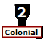
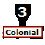

Ranger's Checklist of Tasks
Travel the Time Warp - life in Colonial Times
| 1. | Answer four questions on why colonists came to New World. | |
| 2. | Researched Plimoth Patuxet Museums web site. | |
|
 |
3. | Completed comparison chart of your life to colonial child's life. |
| 4. | Comparison booklet with text and illustrations. | |
| 5. | Read about the Ironworker's dinner. | |
| 6. | Investigate the colonial games websites. | |
| 7. | Recognize the four natural resources needed for an iron works. | |
|
 |
8. | My Daily Journal - a realistic account of your day. |
| 9. | My Daily Journal- Stuck in 1646. | |
| 10. | Application for an iron works job. |